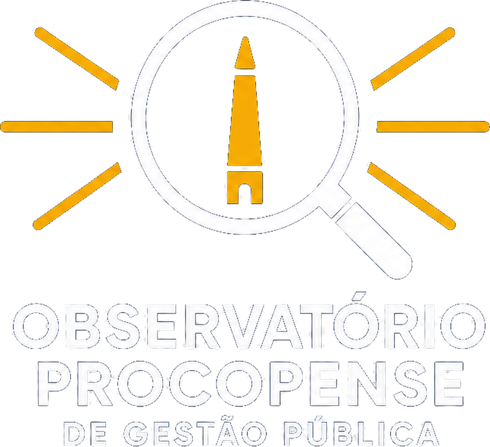

Missão
Acompanhar a gestão municipal e ampliar o acesso da sociedade à informação pública, com análises documentadas e linguagem clara.
Controle social em Cornélio Procópio
O Observatório Procopense de Gestão Pública acompanha a gestão municipal, produz informação baseada em evidências e ajuda a sociedade a participar do controle dos recursos públicos em Cornélio Procópio.
O OPGP é uma organização da sociedade civil, apartidária e independente. Não é um órgão da Prefeitura e não substitui os canais oficiais do município.

O OPGP
O OPGP reúne cidadãos interessados em compreender e acompanhar a gestão pública de Cornélio Procópio. Nosso trabalho parte de documentos e dados públicos, passa por revisão e procura apresentar recomendações úteis à sociedade e às instituições.
Acompanhar a gestão municipal e ampliar o acesso da sociedade à informação pública, com análises documentadas e linguagem clara.
Uma Cornélio Procópio em que qualquer cidadão consegue encontrar, compreender e usar a informação pública.
Apartidarismo, independência, rigor técnico, transparência própria, respeito às pessoas e proteção de dados pessoais.
Texto final de missão, visão e valores em validação pela direção.
Origem, data de constituição e trajetória do Observatório, apresentadas com base em documentos verificáveis.
Em preparaçãoEstrutura de governança, atribuições de cada órgão, responsáveis atuais com mandato, regra de conflito de interesses e informação sobre voluntariado.
Em validaçãoEstatuto vigente, ata de constituição em versão pública, regimento interno, políticas, atas publicáveis, editais e convocações — organizados por tipo e ano.
Em revisão de dados pessoaisO que fazemos
Atuamos de forma preventiva e propositiva, a partir de documentos e dados públicos, em quatro frentes.
Acompanhamos a disponibilidade e a qualidade das informações publicadas pelo município.
Explicamos processos e produzimos análises documentadas.
Mostramos como orçamento, receita e despesa afetam a vida municipal.
Aproximamos cidadãos dos canais, conselhos e audiências públicas.
Todo trabalho distingue fato observado, interpretação, recomendação e limitação.
Planos e prioridades
Plano de trabalho, prioridades, ações em andamento, metas e próximos passos tornados públicos.
Confirmação de estatuto, governança, responsáveis, documentos publicáveis e política editorial.
Publicação do site com diretório de fontes oficiais, guias de acesso, transparência do OPGP e canais de participação.
Primeira leitura dos critérios do Programa Nacional de Transparência Pública (PNTP), com método público e espaço para manifestação.
Fichas-piloto de acompanhamento de uma compra e de uma obra, e guias ampliados.
Metas e indicadores serão publicados quando a direção validar capacidade, fonte, frequência e responsável.
Nossa transparência
Quem acompanha a transparência municipal precisa explicar também como a própria organização funciona e utiliza recursos.
Quando ainda não houver movimentação ou documento para um período, publicaremos uma explicação factual, datada e aprovada — nunca uma seção vazia ou números de exemplo.
Nosso trabalho
Ofícios, requerimentos, relatórios, notas técnicas, posicionamentos e acompanhamentos — cada um com fonte, recorte e situação.
| Situação | O que significa |
|---|---|
| Em preparação | Documento em elaboração ou revisão interna. |
| Protocolado | Enviado ao destinatário institucional, com data registrada. |
| Resposta recebida | Manifestação do órgão recebida e anexada. |
| Concluído | Tema encerrado, com publicação relacionada quando houver. |
| Arquivado | Acompanhamento interrompido, com justificativa. |
A ausência de resposta não é tratada como acusação automática. Quando um prazo é mencionado, mostramos a data usada no cálculo.
Publicações
Relatórios, notas técnicas, estudos, metodologia e documentos produzidos — sempre com página própria, fontes, versão e histórico de correções.
Os primeiros conteúdos passam por revisão técnica e institucional antes de serem publicados. Cada publicação trará tipo, tema, data, autoria, recorte, fontes, resultado com limites e arquivo acessível.
Notícias e na mídia
Publicações próprias, notícias, entrevistas, matérias e menções ao OPGP em veículos de comunicação.
Comunicados e novidades, publicados conforme calendário editorial e com responsável identificado.
Data, veículo, título e link externo de cada aparição — deixando claro que se trata de conteúdo publicado por terceiro.
Onde encontrar
Diretório por temas das informações públicas municipais, com descrição, órgão responsável, link e data de conferência. O OPGP explica o conteúdo e direciona você à fonte oficial.
A data de conferência indica quando o OPGP verificou o link — não é a data de atualização dos dados municipais. Encontrou dificuldade para acessar alguma informação? Conte para o OPGP.
Biblioteca
Guias, perguntas frequentes e materiais sobre orçamento, compras públicas, obras, fiscalização e educação fiscal.
Quando usar, o que escrever no pedido, prazos legais e como recorrer.
Reclamações, sugestões, elogios e denúncias sobre serviços municipais.
Empenho, liquidação e pagamento explicados para quem não é da área.
Do edital à execução: onde está cada documento e o que observar.
Não. O OPGP é uma organização da sociedade civil, apartidária e independente. Não é um órgão da Prefeitura e não substitui o site, o Portal da Transparência, o e-SIC ou a Ouvidoria do município.
Não. Nossos canais atendem assuntos do OPGP. Para pedidos oficiais, use o e-SIC ou a Ouvidoria do município — nossos guias mostram o caminho.
Os temas seguem o plano de trabalho aprovado e passam por definição de recorte e perguntas, coleta em fontes oficiais, registro de evidência e revisão técnica e institucional antes da publicação.
Sim. Toda publicação prevê espaço para manifestação da parte citada e histórico de correções.
Referências e boas práticas
Experiências de outros municípios, observatórios e iniciativas do Paraná que podem inspirar o OPGP e o público. Para cada exemplo: prática observada, data da consulta, aplicação proposta e limite da análise.
A evolução do Índice de Transparência Pública (ITP) dessas cidades ajuda a selecionar experiências para estudo, mas não demonstra que o desenho de seus sites causou essa evolução.
Participação
O controle social se fortalece com mais gente acompanhando. Escolha a forma que combina com você.
Contribua com tempo e conhecimento em análises, guias, comunicação ou organização.
Quero ser voluntário(a)Profissionais e instituições podem colaborar com revisão, capacitação e conhecimento especializado.
Fale conoscoAgenda confirmada, conselho responsável, como participar e links para composição, calendário e atas.
Ver canais oficiaisSugira temas, aponte dificuldades de acesso à informação ou compartilhe uma boa prática.
Enviar sugestãoConte um pouco sobre você. Usaremos estes dados somente para retornar o seu contato sobre voluntariado no OPGP.
Contato e redes sociais
Use este canal para assuntos do OPGP: dúvidas, sugestões de tema, dificuldades de acesso à informação, imprensa ou parcerias.